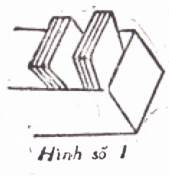
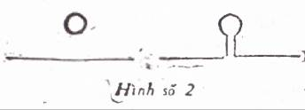

Chương XI
Ký tính mạnh nhất cũng không
ghi rõ bằng thứ mực nhạt nhất
TỪ NGỮ TRUNG HOA
1. Ích lợi của thẻ - Hình thức của thẻ
3. Những qui tắc nên nhớ khi viết lên thẻ tài liệu
1. ÍCH LỢI CỦA THẺ. HÌNH THỨC CỦA THẺ
Chúng ta hiểu biết được mọi sự là nhờ có trí nhớ nên người muốn học trước hết phải luyện trí nhớ. Trong cuốn Kim chỉ nam của học sinh và Bảy bước đến thành công đã có những chương chỉ cách luyện trí nhớ, chúng tôi không xét lại ở đây nữa, chỉ xin kể ít cuốn để bạn nào muốn tham khảo thêm thì đỡ tốn công tìm kiếm.
- Une mémoire extraordinaire của A. Bullas
- L’ éducation de la mémoire của Ch. Julliot
- Pour développer notre mémoire của G. Art
- La mémoire et l’oubli của Dugas
- L’évolution de la mémoire của H. Piéron
- Les maladies de la mémoire của Th. Ribot
- Méthode pratique pour développer la mémoire của P. Jagot
Nhưng, như một tục ngữ Trung Hoa đã nói, ký tính mạnh nhất cũng không ghi rõ bằng thứ mực nhạt nhất, và nhiều khi ta phải dùng thẻ. Thẻ là ký tính bằng giấy.
Trong một chương trên tôi đã nói, khi đọc sách nên đánh dấu ngay vào trong sách những đoạn văn quan trọng rồi ghi vắn tắt cảm tưởng của ta.
Ghi như thế lắm lúc chưa đủ. Ai không muốn đọc lại những câu văn diễm lệ những ý tưởng thâm thúy? Ai không có lần muốn dẫn một giai cú hoặc một danh ngôn vào bài luận, bức thư, bài diễn văn hoặc một tác phẩm của mình?
Những câu ta muốn đọc lại hoặc trích dẫn ấy, nếu chỉ ghi trong sách đã đọc thì vài năm sau, người nào có ký tính mạnh nhất cũng phải tốn công mới kiếm lại được, còn những người mau quên thì chỉ 5-6 tháng sau là tìm không ra.
Vì vậy, chép những câu đó vào một tập riêng thì vẫn hơn. Chép cũng phải có thứ tự lắm. Phải có nhiều tập: tập về văn thơ, tập về danh ngôn, về tài liệu sử ký, địa lý…
Tuy nhiên, như thế cũng vẫn còn bất tiện. Chẳng hạn trong tập thể Danh ngôn, hôm nay bạn ghi vài câu của Khổng Tử về lòng nhân, đạo hiếu, mai bạn ghi tiếp một đoạn của Pascal, Marc Aurèle… Một tuần lễ sau, đọc được một câu khác của Khổng Tử, bạn chép vào đâu? Chép vào chỗ danh ngôn của Khổng Tử thì phải hơn, nhưng đã không bỏ trắng chỗ đó, đành phải chép vào câu sau của Marc Aurèle vậy. Dầu có muốn dành riêng mỗi trang cho mỗi nhà cũng khó: biết để mấy trang cho mỗi nhà? Ít quá thì thiếu, mà nhiều quá thì dư. Rồi tên những nhà đó, nếu không sắp có thứ tự thì khó kiếm mà sắp cách nào? Để bao nhiêu trang cho các tác giả mà tên bắt đầu bằng chữ A, hay chữ B?
Có một cách tiện hơn là chép vào những tờ giấy rời rồi sắp vào những bìa kẹp (chemise). Chẳng hạn mỗi danh ngôn của Khổng Tử bạn chép vào một tờ, rồi những tờ về Khổng Tử sắp chung với nhau. Nhưng bìa kẹp khổ thường lớn (chiều ngang trên 20 phân, chiều dài trên 30 phân), phải dùng những tờ giấy lớn mới hợp, mà giấy phải mỏng để một bìa kẹp chứa được nhiều tờ. Vì vậy khi kiếm phải lật từng tờ, hơi mất công.
Muốn tránh những bất tiện đó, có cách là dùng thẻ.
Thẻ là một miếng giấy cứng, khổ bao nhiêu cũng được. Các tiệm sách lớn ở Pháp bán sẵn những thẻ khổ tiêu chuẩn: 7,5 phân x 12,5 phân. Bạn có thể mua những tờ bìa đóng tập màu nhạt (vàng hoặc xanh lá cây) để viết chữ lên cho dễ thấy. Khổ bìa là 33 x 50 phân. Bạn gấp lại làm 16, thành những thẻ 8,2 x 12,5 phân. Như vậy tốn 1$ bạn được 16 cái thẻ.
Thẻ phải sắp trong hộp thẻ. Hộp xì gà, hộp bích qui có thể dùng làm hộp thẻ. Không có hộp xì gà thì dùng giấy bồi (carton) gấp lại thành những hộp rộng hơn thẻ một chút (từ 9 tới 10 phân), dài từ 20 đến 30 phân, cao bằng 2 phần ba bề cao của thẻ, nghĩa là độ 7-8 phân.
Thẻ xếp đứng trong hộp (coi hình 1). Mỗi hộp chứa được vài trăm thẻ. Nếu trong hộp có ít thẻ, phải dùng một khúc cây hoặc một cục đá để chặn phía sau thẻ cho thẻ đứng được.

Thẻ bán ở tiệm sách thường có đục lỗ ở dưới. Những thẻ đó chỉ để sắp trong các hộp bằng cây hay bằng sắt; gần đáy hộp có một que dài, tròn để luồn qua lỗ của thẻ (coi hình số 2).

Nếu có cơ hội, bạn nên vào các thư viện lớn ở Sài Gòn, Hà Nội sẽ thấy những hộc và thẻ kiểu ấy.
Có hai thứ thẻ:
a) Thẻ thư tịch (fiches bibliographiques)
Để ghi tên sách và những yếu chỉ về tên sách như: tên tác giả, nơi in, năm in, tên nhà xuất bản, xuất bản kỳ thứ mấy, trọn bộ mấy cuốn, đại ý trong sách…
Mỗi cuốn hay mỗi bộ sách phải có hai cái thẻ:
- Một cái sắp theo tên tác giả
- Một cái sắp theo môn loại. Sách về địa lý sắp trước sách về sử ký, sử ký lại sắp trước triết lý…, theo thứ tự chữ đầu của các môn.
Trong loại Địa lý, sách tổng quát sắp trước sách về Việt Nam, rồi tới sách về các nước khác…
Dưới đây là hai mẫu thẻ thư tịch.
Thẻ thư tịch sắp theo tên tác giả.

Số B.27 là số cuốn sách ở trong tủ của bạn. Nếu một bộ có ba cuốn thì có thể cho cuốn thứ nhất số B.27a, cuốn thứ nhì số B.27b, cuốn thứ ba số B.27c rồi trên thẻ chung của ba cuốn, ghi B.27 a-c.
Nếu sách không phải của bạn mà bạn đọc ở thư viện thành phố thì bạn ghi: T.P.M202. T.P. là thành phố. M.202 là số sách ở thư viện.
Thẻ thư tịch để sắp theo môn loại

Thẻ thư tịch có thể dùng để ghi tên một thiên khảo cứu đăng trong báo, như mẫu dưới đây:

b) Thẻ tài liệu (fiches documentaires)
Dùng để chép những đoạn văn mà bạn muốn dùng trong một công việc trước tác của bạn... Sau những đoạn đó, bạn ghi cảm tưởng, ý nghĩ của bạn như trong mẫu dưới đây.

Hàng đầu bạn nên biên tên cuốn sách hoặc bài diễn văn bạn tính viết. Bạn bỏ trắng một vài hàng để sau này chép tên đoạn, rồi chép ý chính trong thẻ tức ý “thế kỷ này thờ kim tiền”.
3. NHỮNG QUI TẮC NÊN NHỚ KHI VIẾT LÊN THẺ TÀI LIỆU
a) Mỗi thẻ chỉ được ghi những ý về một đầu đề.
Nếu bạn ghi chung trên một thẻ những tài liệu và đức sáng sủa, đức gọn, đức tinh xác trong văn chương chẳng hạn, rồi sau muốn ghi thêm tài liệu về đức gọn nữa, bạn sẽ không có chỗ; hoặc khi bạn muốn rút ra một tài liệu nào về đức sáng sủa để dùng vào chỗ khác cũng không được.
Tất nhiên là ta có thể ghi trên một thẻ nhiều tư tưởng của những tác giả khác nhau, miễn những tư tưởng ấy cùng thuộc một đầu đề.
Khi soạn cuốn Luyện văn tôi đã chép những câu sau này chung trên một thẻ về đức sáng sủa trong văn:
- “Bây giờ, văn của ta mới được sáng” Nietzsche.
- Tristan Tzara tuyên bố “Viết là một hành động riêng tư” và “cái nguy cần phải tránh là người đọc hiểu được mình”.
“ Các thi nhân đương làm công chúng ghê tởm thơ” Emile Henriot. (Các thi nhân đó là thi nhân phái “đa đa” của Tristan Tzara).
- “Không biết những thi nhân đó có điều gì để nói không? Chắc là không vì nếu có thì sao họ không nói ra?” Jean Suberville.
b) Nhưng chỉ nên chép lên một mặt thẻ thôi
mặt sau để trắng, phòng sau có thêm bớt, sửa đổi gì không. Như vậy, nếu một thẻ không đủ ghi hết thì nên viết tiếp sang thẻ khác.
c) Vì khổ của thẻ thường nhỏ, ta chỉ có đủ chỗ để chép những câu ngắn thôi.
Nếu phải chép cả một đoạn dài thì chép vào một tập riêng (có đánh số tập, số trang) rồi trong thẻ ta sẽ ghi như sau này:

III. 75 chỉ số tập (III) và số trang (75) trong đó chép đoạn về Võ Duy Dương.
Trong tập III, tất nhiên bạn ghi xuất xứ của đoạn bạn chép như: Nam bộ chiến sử của Nguyễn Bảo Hóa (tủ sách của anh Nguyễn Văn X), in lần thứ nhất năm 1949 (Lửa sống). Trang 134-136.
Nếu bạn có cuốn ấy thì trên thẻ, bạn không ghi III.75 mà ghi Nam bộ chiến sử của Nguyễn Bảo Hóa trang 134-136.
d) Nên viết thu gọn cho ghi được nhiều, nhưng phải viết rõ ràng, kẻo sau khó đọc lắm. Có thể viết tắt.
e) Khi trích một đoạn văn của ai
thì phải chép cho đúng, đánh dấu ngoặc kép ở trước và sau, để khỏi lầm với những câu tóm tắt hoặc phê bình cùng cảm tưởng của bạn.
Nếu cắt bớt một đoạn nào thì nên mở dấu ngoặc đơn, chấm ba chấm rồi khép ngoặc đơn (…) vì nếu không có dấu ngoặc đó thì sau ta có thể lầm tưởng rằng đoạn bỏ bớt đó do tác giả chứ không phải do ta cắt.
f) Phải tránh cái tật ghi chép
Gặp cái gì cũng ghi, ghi cho thật nhiều, chỉ 1-2 tháng mà đặc 3-4 tập 100 trang hoặc non 1000 cái thẻ. Như vậy nếu tự học trong 10-20 năm thì phải cất riêng một căn phố để chứa thẻ mất.
Ta nên nhớ thẻ chỉ để giúp trí nhớ của ta và hễ học thì phải vận dụng óc. Chép hàng vạn hàng ức cái thẻ chưa chắc đã là một người học rộng, nếu ta không chịu nhớ những điều đã học.
Vậy bạn phải suy nghĩ cho kỹ: nếu muốn nghiên cứu một vấn đề nào đó thì hãy dùng thẻ, còn đọc sách để tiêu khiển, hoặc biết thêm nghề nghiệp, về tình hình văn học nước nhà… thì không cần.
Bạn bảo như vậy sẽ quên hết mất và sau này viết sách thì tài liệu đâu mà dùng? Nếu bạn đã quyết chí thì xin bạn cứ ghi chép; còn như chỉ mới dự định, thì tôi tưởng để lúc nào viết sẽ tìm tài liệu lại, như vậy cũng không muộn. Vì lúc đó có thể là 20-30 năm sau hoặc kiếp sau cũng chưa biết chừng. Tôi đã định soạn một cuốn khảo cứu về Nguyễn Công Trứ từ 17 năm trước mà thưa bạn, hiện nay tôi vẫn chưa viết được lấy một hàng. Chẳng phải một mình tôi như thế đâu. Bạn có quen ai là nhà văn, cứ hỏi họ, sẽ biết. Viết văn cũng tựa như mùa đông ở Bắc Việt, sáng thức dậy mà muốn ra khỏi giường vậy. Một là tung mên ngồi phắt dậy, hai là… cứ nằm ỳ ra đó.
a) Thẻ thư tịch
Trên kia tôi đã nói mỗi cuốn sách phải có 2 cái thẻ thư tịch, một thẻ để sắp theo tên tác giả, một thẻ để sắp theo từng loại.
Có nhiều cách phân loại môn học. Cách thịnh hành nhất được khắp toàn cầu dùng, là cách thập tiến phổ cập (Classement décimal universel, viết tắt: C.D.U) do ông Dewey đặt ra. Ông chia hết thảy trí thức của loài người làm 10 loại:
0- Tác phẩm tổng quát.
1- Triết học
2- Tôn giáo. Thần học.
3- Xã hội học. Luật học. Hành chính học.
4- Bác ngữ học. Ngôn ngữ học.
5- Khoa học thuần túy.
6- Khoa học thực dụng. Y học, sinh lý học, công nghệ học.
7- Mỹ thuật. Nghệ thuật thực hành. Du ký và thể thao
8- Văn học.
9- Sử ký và địa lý[53]
Theo tôi, số thẻ thư tịch của chúng ta thường không trên 2000 hoặc 3000 thì không cần theo phương pháp ấy; cứ theo cách của ông P. Wigny mà tôi đã dùng trong chương trên. Ông chia làm 6 loại:
- Tác phẩm tổng quát
- Sử ký và văn minh. Ngôn ngữ học.
- Mỹ thuật.
- Văn hoc.
- Khoa học luân lý (Tôn giáo, Triết lý, Xã hội học, Luật- Kinh tế)
- Khoa học tự nhiên và đích xác (Sinh vật học, Y học, Toán học, Thiên văn học, Vật lý và Hóa, Địa lý).
Nếu số sách của bạn ít hơn, trên dưới 1000, thì cách phân loại của ông Adrien Jans mà tôi sẽ chỉ ở chương XIII có phần tiện hơn cả.
b) Thẻ tài liệu
Khi bắt đầu tra cứu tài liệu để viết sách hoặc soạn bài diễn văn, bạn thường chưa có một bố cục nhất định mà chỉ mới có một mục đích rõ rệt thôi, rồi trong khi suy nghĩ, tìm tòi bạn thay đổi lần lần bố cục để đạt mục đích ấy, hoặc thêm chương này bỏ chương kia, hoặc đưa lên trên ý này ý kia xuống dưới…
Vậy đọc sách, kiếm được tài liệu nào, bạn cứ chép ngay vào thẻ, thẻ đó không cần đánh số trước. Khi nào nghiên cứu xong vấn đề rồi, bạn lập lại bố cục. Bố cục này sẽ không thay đổi mấy nữa. Lúc đó bạn sẽ sắp thẻ theo thứ tự những phần, những chương đã định trong bố cục.
Muốn ngăn các thẻ thuộc về chương này với thẻ thuộc về chương sau, bạn có thể dùng một cái thẻ cao hơn những thẻ thường, (chẳng hạn thẻ dùng thường là 8,2 x 12,5 phân thì thẻ ấy là 8,2 x 15 phân), trên đó bạn ghi số thứ tự, nhan đề của chương cùng những đoạn trong chương, như dưới đây:

Những thẻ nào dùng trong đoạn 1 sẽ đánh số 1, dùng trong đoạn 2 sẽ đánh số 2… Muốn kỹ lưỡng rành mạch hơn thì những thẻ trong đoạn 1 sẽ có những số 1a, 1b, 1c…, nhưng theo tôi việc ấy không cần vì trong khi viết ta còn có thể đổi lại thứ tự của các ý.
Dùng thẻ là một phương pháp rất khoa học được phần đông các học giả theo. Tuy nhiên không nhất định phải dùng thẻ mới tự học hoặc viết sách được. Soạn một bộ tự điển mà không có thẻ thì sẽ lúng túng: mất thì giờ lắm. Soạn một công trình khảo cứu như bộ Nho Giáo của Trần Trọng Kim, có thẻ thì cũng tiện, còn viết những cuốn nho nhỏ như cuốn bạn đương đọc thì không cần tới nó: dùng độ 10 tờ giấy trắng để chép hết những ý quan trọng cũng là đủ rồi.
[53] Về cách phân loại đó, nên coi thêm phụ lục 1 trong cuốn Tổ chức công việc theo Khoa học của soạn giả.